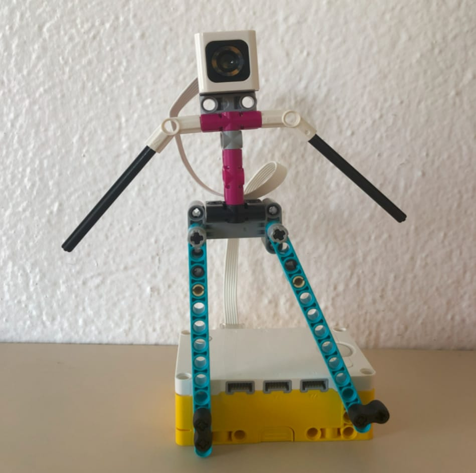

Introdução
A deficiência visual pode ser total ou parcial e pode ser congênita ou adquirida. "Baixa visão" refere-se à capacidade limitada de usar a visão para tarefas diárias, enquanto o daltonismo compromete a percepção de cores. A falta de acesso a informações sobre cores pode excluir pessoas com deficiência visual da sociedade e torná-las dependentes de terceiros. Tradicionalmente, o aprendizado das cores para deficientes visuais começou com triângulos cromáticos de madeira. Atualmente, o sistema See Color, baseado no Braille, visa ajudar essas pessoas a identificar cores. O projeto WorKolor, um robô feito de LEGO® com programação e sensores de cor, foi desenvolvido para facilitar o ensino das cores, usando áudio para anunciar as cores detectadas. Esta abordagem, além das tradicionais formas de aprendizado como tato e olfato, oferece uma nova maneira de ensinar cores a deficientes visuais.
Materiais e métodos
Feito com peças de LEGO®, a ideia de montagem veio pelo pensamento “o projeto deve ser útil para ajudar no cotidiano ou para auxiliar uma situação”. No caso, foi optado por um método de ensino para deficientes visuais. O Robô é composto por 36 peças, incluindo a bateria, conforme mostra a Figuras 1.
Resultados e discussões
Resultados e discussões Foram realizadas baterias de testes de todas as cores presentes no WorKolor.
Quantidade e porcentagem de erros:
Amarelo:0/40(0%)
Azul:0/40(0%)
Branco:3/40(7,5%)
Ciano:10/40(25%)
Preto:3/40(7,5%)
Rosa:0/40(0%)
Verde:5/40(12,5%)
Vermelho:9/40(22,5%)
Conclusão e considerações finais
Verificou-se, em meio aos testes, que o WorKolor é eficiente e prático. Tendo como sua principal função ajudar a identificar cores para os deficientes visuais, desde os com daltonismo, até aos que possuem a visão completamente incapacitada.
Como sugestão para projetos futuros, seria interessante o desenvolvimento mais avançado do modelo, utilizando mais cores, melhores fontes de áudio e visor, além de projetar um estilo de robô mais evoluído e mais humanizado com a função de ajudar no aprendizado tanto de deficiêntes visuais, quanto outros tipos de deficiência e incapacidades.